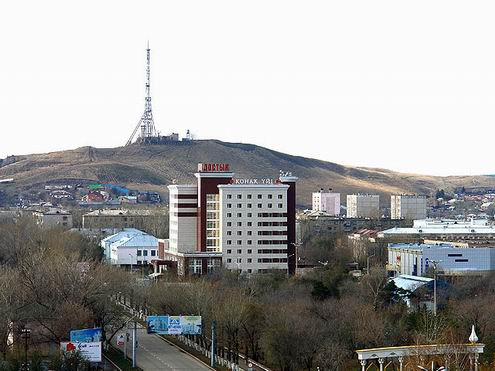

Kokshetau city, Kazakhstan

Kokshetau, also spelled Kokcetav, is a city and administrative center of Akmola oblast (region) of Kazakhstan. Kokshetau city lies along the southern edge of Ishim Steppe of Kazakhstan.
Kokshetau facts aboutkazakhstan.com
Kokshetau was founded in 1824 as an administrative outpost when Russians extended their control over Kazakhs.
Kokchetav town became a district administrative center in 1868 and an oblast center in 1944
On October 7th, 1993, Kokchetav was renamed into Kokshetau
Today Kokshetau city is a substantial industrial center and the junction of Trans-Kazakhstan and Middle Siberian railways.
Additional information